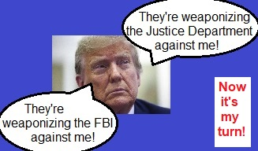
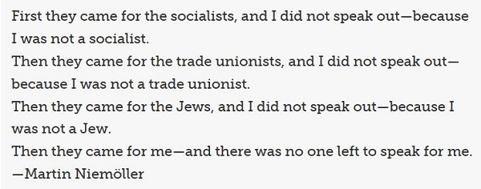

RetributionWatch.com
Monitoring the
worst of DJT's promises

Keep an eye on these Trump annoyers - and hundreds of
others...
WATCH & SEE IF THEY
DISAPPEAR!
(as promised)
And these...

...And thousands of other friends and neighbors!

Yes, he's PROMISED. In the worst
tradition of authoritarian dictators.
See
here in case you missed it somehow.
|
If you support this, shame on you, and don't claim to appreciate democracy
and the separation of powers, a key element of democracy.
Our plan is to collect
and post reports of this as it happens!
Please donate here
(one-time) or here
(long-term) to support.
____________________________

____________________________

Contact
|
Trump promised to get revenge. Here are his targets. From Politico: https://www.politico.com/news/2024/11/06/trump-retribution-enemy-list-00187725 From Liz Cheney to Jack Smith to Mark Milley, Trump has a lengthy inventory of people he’s pledged to punish. Donald Trump ran a campaign based on retribution. Now he is perfectly positioned to carry it out. For years, Trump has peppered his speeches and social media posts with vengeful calls for his political opponents, his critics and members of the media to be prosecuted, locked up, deported and even executed. In the waning weeks of the 2024 campaign, he escalated those promises of retaliation to a fever pitch. But others — including some of Trump’s closest advisers — have warned ominously that he’s far more likely to follow through in a second term. He won’t be inhibited by the need to run for reelection. He will be emboldened by a Supreme Court ruling that grants presidents broad immunity from criminal accountability after they leave office. And he is expected to be surrounded by aides more willing to dispense with norms to carry out his wishes. Based on Trump’s own words, here are the people who have the most to fear. President Joe Biden Trump has frequently called Biden corrupt and, in June, reposted a Truth Social message that said he should be “arrested for treason.” In a speech last year, Trump vowed: “I will appoint a real special prosecutor to go after the most corrupt president in the history of the United States of America, Joe Biden, and the entire Biden crime family.” Vice President Kamala Harris Trump has described Harris’ failure to control migration as so severe that people have been “murdered because of her action at the border.” He told a campaign rally in Pennsylvania in September that Harris “should be impeached and prosecuted” for her role in permitting what he termed an “invasion” of the U.S. by undocumented immigrants. Former President Barack Obama In 2020, Trump accused Obama of “treason” for what Trump describes as the FBI’s surveillance of his 2016 presidential campaign over its ties to Russia. In fact, the email snooping was aimed at a former foreign policy adviser to that campaign. In August of this year, Trump reposted a message on Truth Social calling for “public military tribunals” for Obama. Former Secretary of State Hillary Clinton “Lock her up!” was a memorable refrain of Trump’s 2016 campaign rallies, alluding vaguely to Clinton’s use of a private email account while secretary of state and the ensuing FBI investigation, which did not lead to any charges. In an interview in June of this year, Trump suggested Clinton should face the same sort of criminal prosecutions brought against him. “Wouldn’t it be terrible to throw the president’s wife and the former secretary of state … into jail?” Trump told Newsmax. “It’s a terrible, terrible, path that they’re leading us to and it’s very possible that it’s going to have to happen to them.” Former Speaker Nancy Pelosi In September, Trump said Pelosi should face criminal charges in connection with her husband’s sale of Visa stock a few months before the Justice Department sued the company for alleged antitrust violations. “Nancy Pelosi should be prosecuted for that,” Trump said. He also said Pelosi should be prosecuted for failing to ensure adequate security at the Capitol on Jan. 6, 2021, when Trump supporters stormed the building as Congress was preparing to certify Biden’s win in the 2020 presidential race. In a speech Monday, Trump said Pelosi “could’ve gone to jail for” theatrically ripping up a copy of Trump’s State of the Union address while sitting behind him on the House rostrum in 2020. New York Attorney General Letitia James James earned Trump’s ire as a result of the lawsuit she brought alleging widespread fraud in Trump’s business empire. The case resulted in a judgment of more than $450 million against Trump, who has appealed. Last November, Trump said on Truth Social that James “should be prosecuted” for her role in the suit. In January, he said at a campaign rally in Iowa that James “should be arrested and punished accordingly.” Trump has also reportedly expressed enthusiasm about plans some of his legal supporters have discussed to prosecute James for election interference. Manhattan Justice Arthur Engoron Engoron, a New York trial judge, faced a torrent of attacks from Trump while presiding over James’ civil fraud case. At a campaign event early this year, Trump said Engoron “should be arrested and punished accordingly.” Cheney (R-Wyo.) angered Trump while serving as vice chair of the House select committee that investigated the Jan. 6, 2021, attack on the Capitol. She is also one of the most prominent Republican figures to publicly endorse Harris over Trump. In March, Trump declared on Truth Social that Cheney “should go to jail.” In June, he reposted a message calling Cheney “guilty of treason.” And in the final days of the 2024 campaign, Trump mused: “Let’s put her with a rifle standing there with nine barrels shooting at her.” He said he was accusing her of hypocrisy for supporting the war in Iraq. Special counsel Jack Smith Smith, who brought both of the federal criminal cases against Trump, is a frequent punching bag for the former president. Last year, Trump reposted a social media message from conservative talk show host Mark Levin saying Smith “must go to prison.” In August, Trump reposted a message calling “Jackal Smith … a career criminal” and saying he “should be prosecuted for election interference and prosecutorial misconduct.” Last month, appearing on a radio show, Trump called Smith “mentally deranged” and said he “should be thrown out of the country.” Manhattan District Attorney Alvin Bragg Another one of Trump’s courtroom adversaries is Bragg, who brought the case that led to the former president’s conviction on 34 felony charges stemming from a scheme to secretly pay $130,000 to porn star Stormy Daniels to keep her quiet during the 2016 election about her claims of a sexual encounter with Trump. “There is a case to be made … that the prosecutor should be prosecuted — the district attorney should be prosecuted,” Trump told reporters during the trial in May. Former Chair of the Joint Chiefs of Staff Mark Milley For more than three years, Trump has railed against Milley, claiming that the general’s contact with a Chinese official during the tense transition period four years ago amounted to treason. “This is an act so egregious that, in times gone by, the punishment would have been DEATH!” Trump declared in a social media post last year. The feud was reignited in recent days after Milley called Trump “fascist to his core.” Former FBI Director James Comey Trump famously fired Comey in 2017 and pushed unsuccessfully behind the scenes for Comey to be prosecuted over his interactions with journalists. When Comey released a book the following year, Trump lashed out on Twitter, claiming the former FBI chief “leaked CLASSIFIED information, for which he should be prosecuted,” and lied to Congress. The Justice Department declined to bring any charges against Comey after an inspector general investigation cleared him of leaking classified information, but faulted him for violating DOJ policies on handling of sensitive information. Hunter Biden and the rest of the Biden family Trump has said he’ll name a special counsel to investigate what he says is corruption involving Biden’s family. He’s been vague about who would be investigated and for what, but has sometimes spoken of money Biden’s son Hunter accepted from Chinese sources. “When I get back in office, I will appoint a real special prosecutor to investigate every detail of the Biden crime family of corruption,” Trump said last year. Hunter Biden was found guilty on gun-related charges in June and pleaded guilty to tax violations in September. He’s never faced any charge directly related to his work for foreign entities. Former FBI special agent Peter Strzok For more than six years, Trump has been accusing Strzok of treason based on text messages he exchanged while working on aspects of the investigation into possible Russian influence on Trump’s 2016 campaign. Some messages released by DOJ’s officials in 2017 showed Strzok disparaging Trump as an “idiot” and saying in reference to Trump potentially becoming president: “I’m afraid we can’t take that risk.” Strzok has disputed Trump’s interpretation of the messages and said he was not suggesting the FBI would prevent Trump from serving as president. Former FBI attorney Lisa Page Trump has also lambasted Page, who was in a romantic relationship with Strzok, suggesting she is guilty of treason based on her comments in the text exchanges. Rep. Adam Schiff Trump has repeatedly excoriated Schiff (D-Calif.), who was elected to the Senate on Tuesday and served as chair of the House Intelligence Committee when Trump was in office and under intense scrutiny over his ties to Russia. In 2019, Trump clashed with Schiff after Schiff read what he acknowledged was an exaggerated version of what Trump might have said in a controversial phone call with Ukrainian President Volodymyr Zelenskyy. “It bore NO relationship to what I said on the call. Arrest for Treason?” Trump wrote on Twitter. Trump’s vitriol against Schiff has continued, with the former president posting on Truth Social last year: “Schiff is a sleazebag and traitor, and should be prosecuted for the damage he has done to our Country!” Facebook founder Mark Zuckerberg Trump and some of his allies have been sharply critical of Zuckerberg after he and his wife, Priscilla Chan, gave $420 million in 2020 to improve election infrastructure. Trump backers contend the money was a thinly veiled plot to undercut his reelection. In a book released in September, Trump accused Zuckerberg of a “shameful … plot against the president” and warned: “We are watching him closely, and if he does anything illegal this time he will spend the rest of his life in prison.” Former Manhattan Assistant District Attorney Mark Pomerantz Trump attacked former prosecutor Pomerantz, who quit Bragg’s office after Bragg initially refused to file charges against the former president. In a Truth Social post last year, Trump said Pomerantz engaged in “disgraceful conduct” by writing a book about his work and said the prosecutor could face a felony charge for disclosing secret grand jury information. Pomerantz said in his book that he was careful not to reveal grand jury information. No charge was ever filed. Former Trump attorney Michael Cohen Trump has repeatedly lashed out at Cohen, his former lawyer and fixer who turned on him about a year and a half into his presidency and became a key witness at the hush money trial. “Cohen should be prosecuted for lying and all of the tumult and cost he put the D.A.’s Office through,” Trump wrote on Truth Social last year. After Cohen testified in the civil fraud case against Trump and his companies last year, Trump reposted a message quoting his lawyer Alina Habba as saying Cohen perjured himself: “Cohen should be prosecuted for what he did in that courtroom.” U.S. Capitol Police Lt. Michael Byrd Trump has joined with his supporters — some of whom took part in the Jan. 6, 2021, Capitol riot — to call for prosecution of Byrd, the U.S. Capitol Police officer who shot and killed rioter Ashli Babbitt as she attempted to breach the entrance to the Speaker’s Lobby while House members were being evacuated. The Justice Department announced in April 2021 that it closed the investigation into Babbitt’s death and no charges would be filed against Byrd. Last year, Trump called Byrd a “thug” and “coward,” adding: “Ashli Babbitt was murdered!” Rep. Jamaal Bowman After Bowman (D-N.Y.) pulled a fire alarm in a House office building last year as his party sought to delay a vote on a spending bill, Trump called for the lawmaker to face an obstruction of Congress charge. “It was a very dangerous ‘Obstruction of an Official Proceeding,’ the same as used against our J-6 prisoners,” Trump wrote on Truth Social. “Actually, his act may have been worse. HE MUST SUFFER THEIR SAME FATE. WHEN WILL HIS TRIAL BEGIN???” 51 intelligence professionals who signed letter about Hunter Biden laptop Trump remains galled by a letter from intelligence professionals weeks before the 2020 presidential election, contending that a release of purported emails from Hunter Biden “has all the classic earmarks of a Russian information operation.” The ex-officials acknowledged in the letter that they didn’t know for certain whether the emails were “genuine,” but said the disclosures were “suspicious.” Subsequent reporting and evidence prosecutors presented at Hunter Biden’s trial in Delaware earlier this year support the authenticity of the messages. Prosecutors extracted many of Biden’s messages from a laptop he left for repair at a computer shop near his home. In 2022, Trump reposted on Truth Social a New York Post cover dubbing the signatories “Spies who lie,” and another message that asked: “When are the intelligence Officers That signed the ‘Hunter Biden laptop is Russian disinformation’ letter going to JAIL?” “They should be prosecuted for what they did,” Trump added at a June rally. Members of the Jan. 6 select committee While singling out Cheney for particular scorn, Trump has also blasted the other eight members of the Jan. 6 committee and repeatedly urged that they face criminal charges. “The Unselect Committee of political Hacks & Thugs has been totally discredited,” Trump wrote on Truth Social last year. “They should be tried for Fraud and Treason, and those imprisoned and being persecuted should be exonerated and released, NOW!” Unspecified people engaged in election fraud Despite few examples of verified election fraud, Trump has threatened severe criminal consequences for anyone who engages in such behavior, and he’s muddied the waters by suggesting such tampering went on during the 2020 race — and was bound to occur in 2024, too. “WHEN I WIN, those people that CHEATED will be prosecuted to the fullest extent of the Law, which will include long term prison sentences so that this Depravity of Justice does not happen again,” Trump said on Truth Social in September. “Please beware that this legal exposure extends to Lawyers, Political Operatives, Donors, Illegal Voters, & Corrupt Election Officials. Those involved in unscrupulous behavior will be sought out, caught, and prosecuted at levels, unfortunately, never seen before in our Country.” POLITICO reporters, editors and publisher Trump has also called for stern measures — including imprisonment — for journalists who refuse to identify their sources. He specifically seized on POLITICO’s exclusive report in May 2022 about a draft Supreme Court opinion overturning Roe v. Wade. The Supreme Court announced in January 2023 that an investigation it conducted had failed to conclusively identify any individuals who disclosed the draft, but Trump has told his supporters that more aggressive tactics could quickly ascertain the source. “Go to the reporter & ask him/her who it was. If not given the answer, put whoever in jail until the answer is given. You might add the publisher and editor to the list,” Trump wrote on Truth Social last year. “Stop playing games, this leaking cannot be allowed to happen. It won’t take long before the name of this slime is revealed!” At a rally in 2022, Trump raised the specter of prison rape as a potential tool to identify a leaker. “When the reporter learns that he’s going to be married in two days to a certain prisoner that’s extremely strong, tough and mean, he will say … ‘You know, I think I’m going to give you the information. Here’s the leaker. Get me the hell out of here.’” |